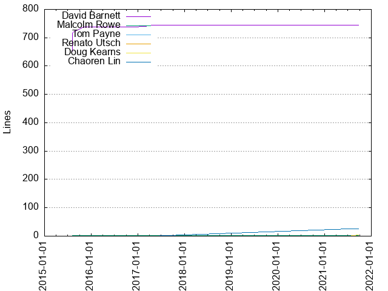
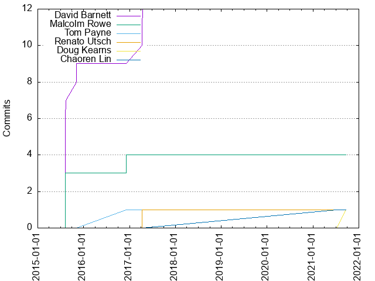

Authors
| Author | Commits (%) | + lines | - lines | First commit | Last commit | Age | Active days | # by commits |
|---|
| David Barnett | 12 (60.00%) | 745 | 40 | 2015-08-06 | 2017-04-14 | 617 days, 3:31:15 | 5 | 1 |
| Malcolm Rowe | 4 (20.00%) | 3 | 2 | 2015-08-06 | 2016-12-07 | 488 days, 15:08:59 | 2 | 2 |
| Tom Payne | 1 (5.00%) | 1 | 1 | 2016-12-07 | 2016-12-07 | 0:00:00 | 1 | 3 |
| Renato Utsch | 1 (5.00%) | 1 | 1 | 2017-04-09 | 2017-04-09 | 0:00:00 | 1 | 4 |
| Doug Kearns | 1 (5.00%) | 4 | 0 | 2021-09-22 | 2021-09-22 | 0:00:00 | 1 | 5 |
| Chaoren Lin | 1 (5.00%) | 26 | 15 | 2021-07-07 | 2021-07-07 | 0:00:00 | 1 | 6 |


| Month | Author | Commits (%) | Next top 5 | Number of authors |
|---|
| 2021-09 | Doug Kearns | 1 (100.00% of 1) | | 1 |
| 2021-07 | Chaoren Lin | 1 (100.00% of 1) | | 1 |
| 2017-04 | David Barnett | 3 (75.00% of 4) | Renato Utsch | 2 |
| 2016-12 | Tom Payne | 1 (50.00% of 2) | Malcolm Rowe | 2 |
| 2015-11 | David Barnett | 2 (100.00% of 2) | | 1 |
| 2015-08 | David Barnett | 7 (70.00% of 10) | Malcolm Rowe | 2 |
| Year | Author | Commits (%) | Next top 5 | Number of authors |
|---|
| 2021 | Doug Kearns | 1 (50.00% of 2) | Chaoren Lin | 2 |
| 2017 | David Barnett | 3 (75.00% of 4) | Renato Utsch | 2 |
| 2016 | Tom Payne | 1 (50.00% of 2) | Malcolm Rowe | 2 |
| 2015 | David Barnett | 9 (75.00% of 12) | Malcolm Rowe | 2 |
| Domains | Total (%) |
|---|
| gmail.com | 10 (50.00%) |
|---|
| google.com | 9 (45.00%) |
|---|
| users.noreply.github.com | 1 (5.00%) |
|---|